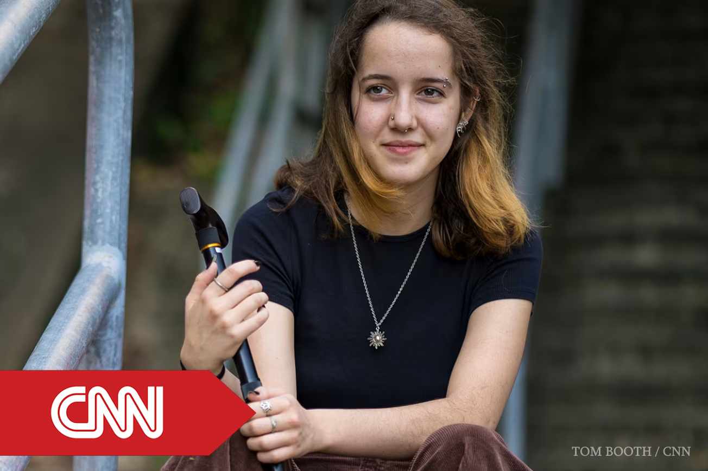

“Millions have the same ‘bendy body’ disease as my daughter. Why isn’t the medical profession paying more attention?”
A feature exploring the under-recognition of hEDS and the challenges surrounding diagnosis. The article highlights my research proposing a novel mechanism linking collagen-cell interactions to connective tissue dysfunction, and its potential to inform future diagnostic approaches.